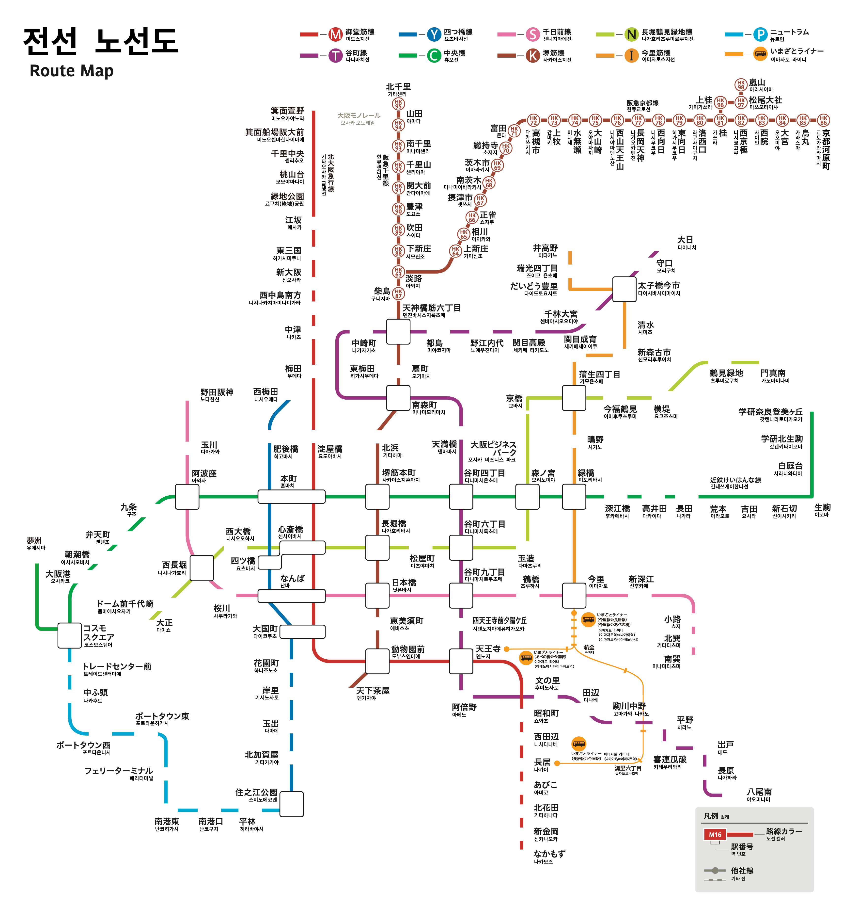
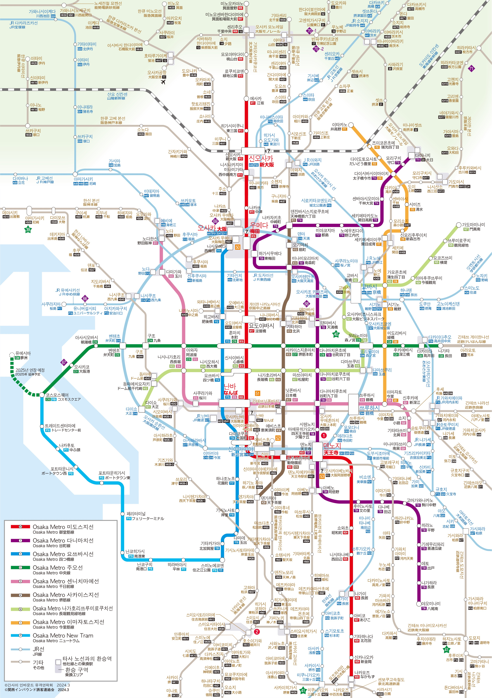
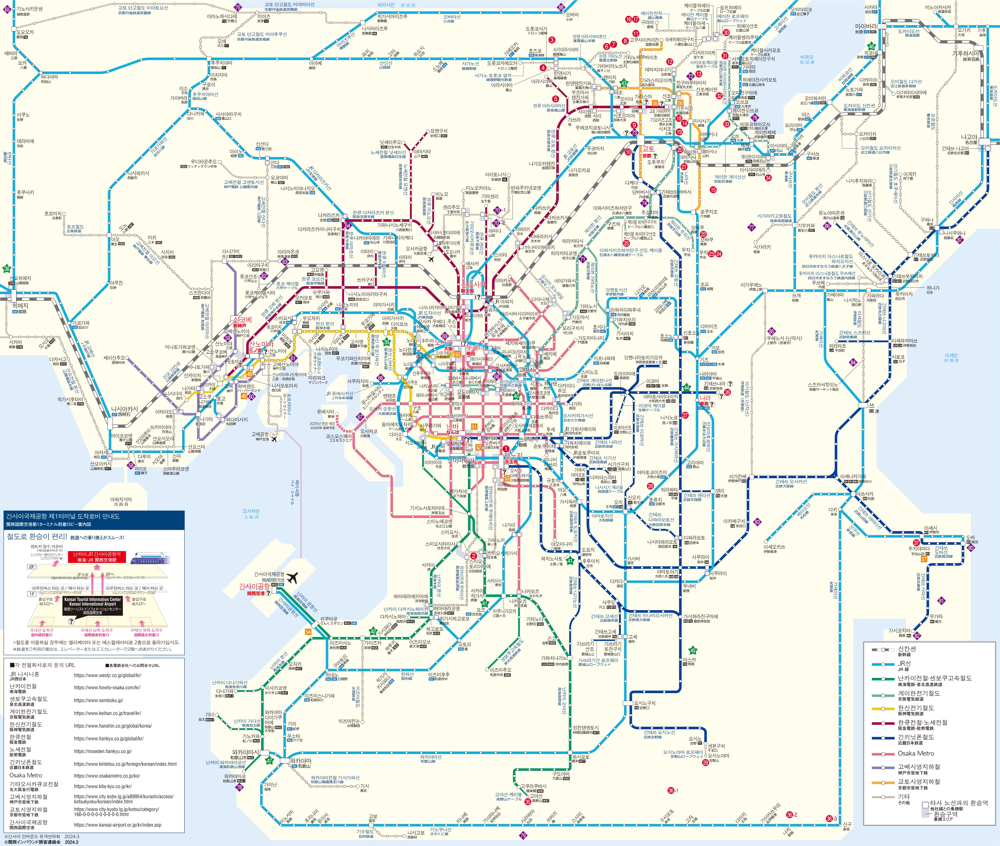

🗺️ 우메다 『이비스 호텔』 기준 핵심 요약 + 공식 한글 노선도 4종
오사카·간사이 지역 전체 노선도 한눈에 보기
글씨가 작아 보기 힘든 노선도를 『확대 버튼(+1.8배 / +2.8배)』과 『핵심 노선 요약도』로 쉽게 확인하세요!
🎯 1. 부모님이 실제로 타실 『오사카 핵심 6대 노선』 큰글씨 요약도
오사카 지하철·전철은 노선마다 고유 색깔과 알파벳 역 번호(예: 우메다 = 빨간색 M16)가 정해져 있어, 일본어를 몰라도 색깔과 숫자만 보면 절대 길을 잃지 않습니다!
M
① 오사카 메트로 미도스지선 (빨간색 · 여행 1순위 노선!)
숙소 근처 『우메다역(M16)』에서 난바·도톤보리·신사이바시·덴노지까지 환승 없이 한 번에 갑니다!
신오사카M13(신칸센)
⇄
🏨 우메다M16(숙소 도보5분)
➔
혼마치M18(주오선 환승)
➔
신사이바시M19(쇼핑거리·7분)
➔
🔥 난바(도톤보리)M20(글리코상·9분)
➔
도부쓰엔마에M22(신세카이/쓰텐카쿠)
➔
덴노지M23(하루카스300·15분)
T
② 오사카 메트로 다니마치선 (보라색 · 오사카성 직통!)
이비스 호텔에서 가장 가까운 『히가시우메다역(T20, 도보 3분)』에서 오사카성까지 3정거장(6분)!
나카자키초T19(레트로 카페거리)
⇄
🏨 히가시우메다T20(숙소 도보3분)
➔
미나미모리마치T21(사카이스지선 환승)
➔
덴마바시T22(게이한선 환승)
➔
🏯 다니마치4초메T23(오사카성 남문·6분)
➔
덴노지T27(하루카스300)
C
③ 오사카 메트로 주오선 (초록색 · 가이유칸/대관람차 & 오사카성 공원)
미도스지선 『혼마치역(M18)』 또는 다니마치선 『다니마치4초메역(T23)』에서 초록색 주오선으로 갈아탑니다.
유메시마C09(박람회장)
⇄
🎡 오사카코C11(가이유칸·덴포잔 관람차)
⇄
벤텐초C13(JR순환선 환승)
⇄
🔄 혼마치C16(미도스지선 환승)
⇄
다니마치4초메C18(오사카성)
⇄
🌳 모리노미야C19(오사카성 공원 정문)
K
④ 오사카 메트로 사카이스지선 (갈색 · 주택박물관 & 구로몬시장)
숙소 동쪽 『오기마치역(K12)』 또는 『미나미모리마치역(K13)』에서 탑승합니다 (한큐 센리선과 직결).
👘 덴진바시스지6초메K11(오사카 주택박물관)
⇄
🏨 오기마치K12(숙소 도보7분)
➔
기타하마K14(강변 카페거리)
➔
나가호리바시K16
➔
🍣 닛폰바시K17(구로몬시장·도톤보리 동쪽)
➔
🗼 에비스초K18(쓰텐카쿠 타워 바로 앞)
O
⑤ JR 오사카 순환선 (주황색 O) & 간사이공항선 (파란색 S)
『JR 오사카역(O11)』에서 오사카성 공원·유니버설 스튜디오(USJ)·간사이공항으로 연결됩니다.
✈️ 간사이공항하루카 47분 / 간쿠쾌속 65분
⇄
니시쿠조O14(유니버설시티 P 환승)
⇄
🏨 JR 오사카역O11(숙소 도보6분)
➔
덴마O10(덴진바시스지 상점가)
➔
사쿠라노미야O09
➔
🏯 오사카조코엔O08(오사카성 공원·10분)
HK
⑥ 한큐전철 (교토·아라시야마·고베) & JR 신쾌속 (교토·고베)
숙소에서 도보 6분 거리인 『한큐 오사카우메다역』과 『JR 오사카역』에서 주변 도시로 바로 출발합니다.
🚢 고베 산노미야한큐 27분 / JR 21분
⇄
🏨 오사카우메다 / JR오사카HK01 / JR A47
➔
🎋 가쓰라 ➔ 아라시야마한큐 교토선·아라시야마선
➔
⛩️ 교토 가와라마치HK86(한큐 특급 43분·청수사 방면)
/
🚅 JR 교토역JR 신쾌속 29분
📍 2. 숙소(이비스 오사카 우메다) 출발 ➔ 주요 관광지별 타는 노선 조견표
👈 표를 좌우로 밀거나 버튼을 눌러보세요
| 목적지 (관광 명소) | 타는 역 (숙소 기준) | 탑승 노선 (색깔·기호) | 내리는 역 | 소요시간 · 요금 |
|---|---|---|---|---|
| 🔥 도톤보리 · 글리코상 신사이바시 상점가 |
지하철 우메다역 (M16) (7-72 엘리베이터로 지하 직결) |
M 미도스지선 (빨간색) 나카모즈·덴노지 방면(1번 홈) |
난바역 (M20) 14번 출구 (신사이바시는 M19 하차) |
4정거장 (9분) 240엔 (ICOCA) |
| 🏯 오사카성 천수각 | 지하철 히가시우메다역 (T20) (숙소에서 도보 3분) |
T 다니마치선 (보라색) 덴노지·야오미나미 방면(1번 홈) |
다니마치4초메역 (T23) 1-B 또는 9번 출구 |
3정거장 (6분) 240엔 (ICOCA) |
| 🌆 하루카스 300 전망대 덴노지 공원 |
지하철 우메다역 (M16) | M 미도스지선 (빨간색) 덴노지·나카모즈 방면 |
덴노지역 (M23) 역과 백화점·전망대 직결 |
7정거장 (15분) 290엔 (ICOCA) |
| 🗼 신세카이 · 쓰텐카쿠 | 지하철 우메다역 (M16) (또는 오기마치역 K12) |
M 미도스지선 (빨간색) (또는 갈색 사카이스지선 K) |
도부쓰엔마에역 (M22) 1번 출구 (또는 에비스초역 K18 3번 출구) |
6정거장 (13분) 240엔 (ICOCA) |
| 🍣 구로몬 시장 | 지하철 오기마치역 (K12) (또는 우메다역 M16 ➔ 난바역) |
K 사카이스지선 (갈색) 덴가차야 방면 |
닛폰바시역 (K17) 10번 출구 바로 앞 |
5정거장 (10분) 240엔 (ICOCA) |
| 🎡 가이유칸 (해유관) 덴포잔 대관람차 |
지하철 우메다역 (M16) | M 미도스지선 ➔ 혼마치역(M18)에서 C 주오선 (초록색) 환승 |
오사카코역 (C11) 1번 출구 도보 5분 |
약 22분 (환승 1회) 290엔 (ICOCA) |
| 👘 오사카 주택박물관 덴진바시스지 상점가 |
지하철 히가시우메다역 (T20) (또는 도보 12분) |
T 다니마치선 (보라색) 다이나이치 방면(2번 홈) |
덴진바시스지6초메역 (T18) 3번 출구 건물 8층 직결 |
2정거장 (4분) 190엔 (ICOCA) |
| ⛩️ 교토 시내 · 청수사 기온거리 · 아라시야마 |
한큐 오사카우메다역 (HK01) 3층 개찰구 1·2·3번 홈 |
HK 한큐 교토선 『특급(特急)』 | 교토 가와라마치역 (HK86) (아라시야마는 가쓰라역 환승) |
43분 410엔 (ICOCA) |
| ✈️ 간사이국제공항 (KIX) | 한큐 삼번가 고속버스터미널 또는 JR 오사카역 |
공항 리무진버스 / JR 특급 하루카(지하 21번 홈) / JR 간쿠쾌속(지상 1번 홈 1~4호차) |
간사이공항 제1·2터미널 | 47~65분 1,180~1,900엔 |
🚇 3. [공식 한글] 오사카 지하철 (Osaka Metro) 전체 노선도
💡 노선도 크게 보는 법: 아래 『➕ 1.8배 확대』 또는 『➕➕ 2.8배 크게 확대』 버튼을 누른 뒤 손가락으로 상하좌우로 밀어 보시거나, 『🖼️ 새 창에서 원본 열기』를 누르면 스마트폰 두 손가락으로 마음껏 확대해서 보실 수 있습니다!

▲ 오사카 메트로(지하철 9개 노선) + 한큐 교토선(우메다~교토 가와라마치·아라시야마) 공식 한국어 노선도 (중앙 왼쪽 빨간색 『우메다』와 보라색 『히가시우메다』가 부모님 숙소 위치입니다)
🚆 4. [공식 한글] 오사카 시내 통합 노선도 (지하철 + JR순환선 + 한큐·난카이·긴테쓰)
오사카 지하철뿐만 아니라 JR 오사카 순환선(하늘색 실선), 유니버설시티역(66번), 오사카성(40번), 한큐·한신·난카이·긴테쓰·게이한 환승역까지 한 장에 모두 표시된 한국어 통합 노선도입니다.

▲ 오사카 시내 전체 철도 통합 한국어 노선도 (빨간 테두리로 표시된 신오사카 · 오사카/우메다 · 난바 · 덴노지 4대 거점역을 중심으로 보시면 한눈에 들어옵니다)
🚅 5. [공식 한글] JR 서일본 광역 노선도 (간사이공항 · 오사카 · 교토 · 고베 · 나라)
JR 특급 하루카 · 간쿠쾌속 · JR 교토선 신쾌속 · 오사카 순환선을 타실 때 보는 JR 공식 한국어 노선도입니다. 아래쪽 파란색 『S 간사이공항』에서 중앙의 『오사카』, 오른쪽 위의 『교토』까지 이어지는 흐름을 확인하세요.

▲ JR 서일본(JR-WEST) 한국어 공식 노선도 (2026년 최신판 · 노선 기호 A 교토/고베선, O 오사카순환선, P 유니버설시티, S 간사이공항선, R 한와선)
🗺️ 6. [공식 한글] 간사이 지역 전체 광역 노선도 (오사카 · 교토 · 고베 · 나라 전 노선)
오사카를 중심으로 교토(청수사·아라시야마·후시미이나리), 고베(산노미야·아리마온천), 나라(사슴공원), 간사이공항까지 간사이 지방의 모든 기차·사철·지하철을 총망라한 대축척 한국어 노선도입니다.

▲ 간사이 인바운드 유객연락회 공식 한국어 광역 철도 노선도 (왼쪽 아래 간사이국제공항 제1터미널 도착로비 안내도 포함)